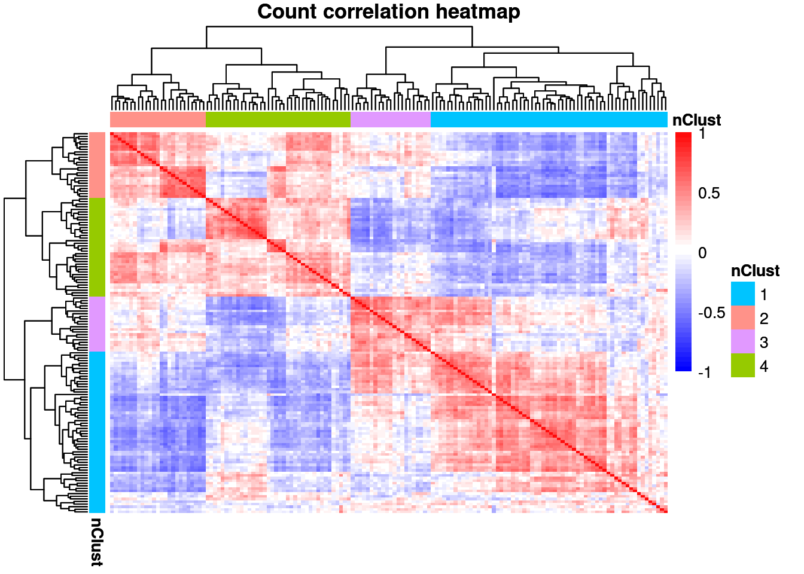
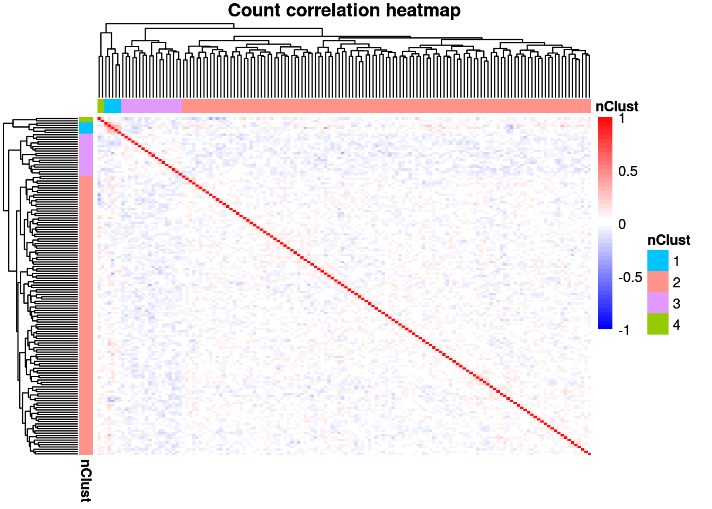

suppressPackageStartupMessages({
library(OUTRIDER)
library(SummarizedExperiment)
library(ggplot2)
library(data.table)
library(dplyr)
library(magrittr)
library(readr)
library(tibble)
})#########################################################
fpkmCutoff <- 1
# Get counts data
counts <- fread(snakemake@input$counts) %>% as.data.frame()
# counts <- fread('/s/project/mitoMultiOmics/multiOMICs_integration/raw_data/raw_counts.tsv') %>% as.data.frame()
rownames(counts) <- counts$gene_id
counts$gene_id <- NULL
# Add sample annotation for OUTRIER object colData
# sa <- fread('/s/project/mitoMultiOmics/multiOMICs_integration/raw_data/proteomics_annotation.tsv')
sa <- fread(snakemake@input$sa)
sa <- sa[USE_FOR_PROTEOMICS_PAPER == T]
sa <- sa[ SAMPLE_ID %in% colnames(counts) , .(SAMPLE_ID, gender)]
sa[, sampleID := SAMPLE_ID]
sa$SAMPLE_ID <- NULL
sa <- as.data.frame(sa)
rownames(sa) <- sa$sampleID
# Add gene annotation rowData
# gene_annot <- fread('/s/project/mitoMultiOmics/multiOMICs_integration/datasets/gene_annotation_v29.tsv')
gene_annot <- fread(snakemake@input$gencode_annotation)
gene_annot_data <- data.table(gene_id_unique = rownames(counts))
gene_annot_data <- left_join(gene_annot_data, gene_annot[,.(gene_id_unique, gene_name_unique, gene_type, gene_status)], by = "gene_id_unique")
# Create Outrider dataset obj
ods <- OutriderDataSet(countData=counts, colData = sa, rowData = gene_annot_data)
# filter not expressed genes
gencode_txdb <- loadDb(snakemake@input$txdb)
# gencode_txdb <- loadDb('/s/project/mitoMultiOmics/multiOMICs_integration/datasets/txdb.db')
seqlevelsStyle(gencode_txdb) <- "UCSC"
gencode_txdb <- keepStandardChromosomes(gencode_txdb)
ods <- filterExpression(ods, gtfFile=gencode_txdb, filter=FALSE, fpkmCutoff=fpkmCutoff)
g <- plotFPKM(ods) + theme_bw(base_size = 14)growData(ods)$counted1sample = rowSums(assay(ods)) > 0
# Save the ods object before filtering, so as to preserve the original number of genes
saveRDS(ods, snakemake@output$ods_unfiltered)#########################################################
# threads <- 30
ods <- ods[mcols(ods)$passedFilter,]
ods <- estimateSizeFactors(ods)
a = 5
b = min(ncol(ods), nrow(ods)) / 3 # N/3
Nsteps = min(20, ncol(ods)/3, nrow(ods)/3) # Do either 20 steps or N
pars_q <- round(exp(seq(log(a),log(b),length.out = Nsteps))) %>% unique plotCountCorHeatmap(ods, normalize=F)
ods <- findEncodingDim(ods, lnorm = T, BPPARAM = MulticoreParam(snakemake@threads), params = pars_q)
ods <- OUTRIDER(ods, BPPARAM = MulticoreParam(snakemake@threads))## [1] "Mon Feb 15 18:30:08 2021: Initial PCA loss: 6.60163590980244"
## [1] "Mon Feb 15 18:31:51 2021: Iteration: 1 loss: 5.83584397995292"
## [1] "Mon Feb 15 18:33:21 2021: Iteration: 2 loss: 5.8199161940324"
## [1] "Mon Feb 15 18:34:46 2021: Iteration: 3 loss: 5.81266596063896"
## [1] "Mon Feb 15 18:35:47 2021: Iteration: 4 loss: 5.80909529101585"
## [1] "Mon Feb 15 18:36:45 2021: Iteration: 5 loss: 5.80637018459759"
## [1] "Mon Feb 15 18:37:38 2021: Iteration: 6 loss: 5.80500519630389"
## [1] "Mon Feb 15 18:38:26 2021: Iteration: 7 loss: 5.80373951269567"
## [1] "Mon Feb 15 18:39:05 2021: Iteration: 8 loss: 5.8027125906191"
## [1] "Mon Feb 15 18:39:43 2021: Iteration: 9 loss: 5.80200113691237"
## [1] "Mon Feb 15 18:39:55 2021: Iteration: 10 loss: 5.80197731426509"
## [1] "Mon Feb 15 18:40:07 2021: Iteration: 11 loss: 5.80196220829123"
## [1] "Mon Feb 15 18:40:23 2021: Iteration: 12 loss: 5.80183926922132"
## [1] "Mon Feb 15 18:40:36 2021: Iteration: 13 loss: 5.80182294912776"
## [1] "Mon Feb 15 18:40:51 2021: Iteration: 14 loss: 5.80181229070099"
## [1] "Mon Feb 15 18:41:16 2021: Iteration: 15 loss: 5.80159825112584"
## Time difference of 10.83142 mins
## [1] "Mon Feb 15 18:41:16 2021: 15 Final nb-AE loss: 5.80159825112584"message("outrider fitting finished")plotCountCorHeatmap(ods, normalize=TRUE)
row.names(ods) <- rowData(ods)$gene_name_unique
# Save OUTRIDER OBJECT WITH RESULTS
saveRDS(ods, snakemake@output$ods)
# ods <- readRDS("/s/project/mitoMultiOmics/multiOMICs_integration/processed_data/outrider/ods.Rds")
res <- OUTRIDER::results(ods, all = TRUE)
res[, FC := round(2^l2fc, 2)]
res[, geneID := toupper(geneID)]
setnames(res,
c("geneID", "sampleID", "pValue", "padjust", "normcounts",
"zScore", "l2fc", "aberrant", "FC"),
c("geneID" , "SAMPLE_ID", "RNA_PVALUE" , "RNA_PADJ", "normcounts",
"RNA_ZSCORE","RNA_LOG2FC", "RNA_outlier", "RNA_FC" ) , skip_absent=TRUE)
res$geneID[grep('ZNF503_2', res$geneID)] <- 'ZNF503' # This gene appears as ZNF503_2
res <- res[,c("SAMPLE_ID", "geneID", "normcounts", "RNA_FC","RNA_LOG2FC", "RNA_ZSCORE", "RNA_PVALUE" , "RNA_PADJ","RNA_outlier")]
res <- res[!duplicated(res), ]
res <- res[order(res$RNA_PADJ), ]
res <-res[!duplicated(res[, c("SAMPLE_ID", "geneID")]), ]
res <- res[!is.na(res$geneID), ]
res <- res[!is.na(res$SAMPLE_ID), ]
saveRDS(res, snakemake@output$results)
# saveRDS(res, '/s/project/mitoMultiOmics/multiOMICs_integration/processed_data/outrider/OUTRIDER_results.rds')